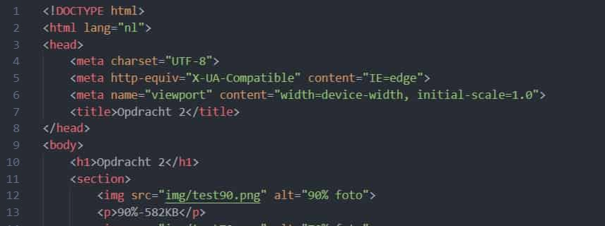

90%-582KB
70%-563KB
40%-543KB
De kwaliteit gaat naar beneden net als de bestandsgrootte maar je merkt dus ook dat de foto minder duidelijk word en
bepaalde kleuren verloren gaan omdat het allemaal wat waziger word en meer in elkaar overloopt waardoor ook sommige details
verloren gaan
70%-208KB
0%-180KB
De leesbaarheid van de tekst vermindert en hoe lager da kwaliteit hoe meer distortion rond de tekst er ook komt